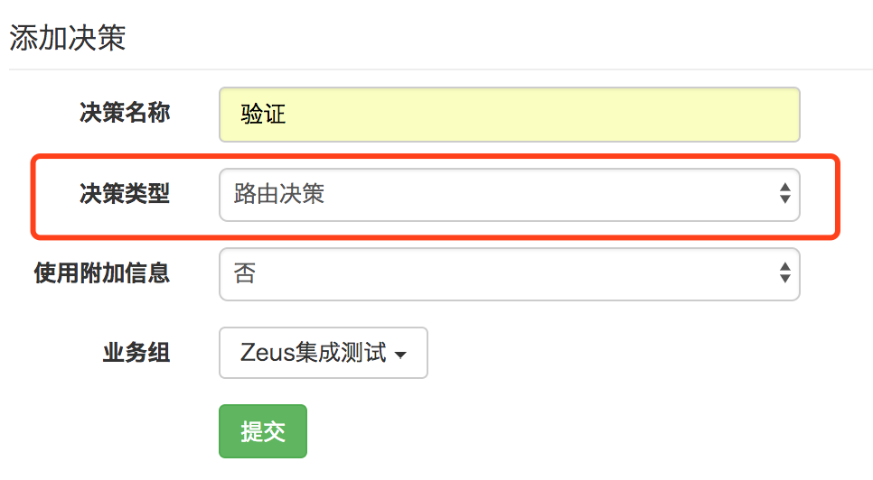
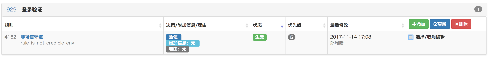
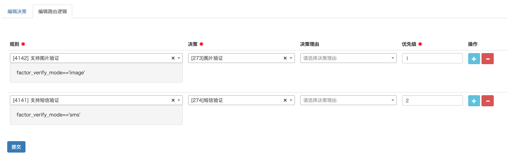

说明：路由决策使用文档
路由决策要解决的问题
举个例子：在登录时，若发现用户在非可信环境中（即符合人机识别特征），则根据当前环境支持的验证方式返回其中的一种。人机识别特征有10个，验证方式有2个。
在没有路由决策之前，我们需要配置20条规则：
- 规则1：（人机识别特征1）+（支持滑块验证） 对应决策1（滑块验证）
- 规则2：（人机识别特征1）+（支持图片验证） 对应决策2（图片验证）
- 规则3：（人机识别特征2）+（支持滑块验证） 对应决策1（滑块验证）
- 规则4：（人机识别特征2）+（支持图片验证） 对应决策2（图片验证）
- ：
- 规则19：（人机识别特征10）+（支持滑块验证） 对应决策1（滑块验证）
- 规则20：（人机识别特征10）+（支持滑块验证） 对应决策1（滑块验证）
在有了路由决策之后，我们仅需配置10条规则：
- 规则1：（人机识别特征1） 对应决策（路由决策：验证）
- 规则2：（人机识别特征2） 对应决策（路由决策：验证）
- ：
- 规则10：（人机识别特征10） 对应决策（路由决策：验证）
路由决策的价值
将与决策相关的逻辑从规则中拆分出来，提升规则配置的效率。
操作举例
-
创建路由决策（决策/添加决策）

-
创建登录验证场景，对于命中“非可信环境的”规则的用户触发“验证”决策，注意，验证决策为路由决策，没有指明具体返回哪种验证方式

- 编辑路由决策的路由逻辑
如果业务方支持图片验证，优先返回图片验证决策，否则判断业务是否支持短信验证，如果支持则返回短信验证决策，如果配置的规则都不命中则返回路由决策id，由业务方自己判断使用何种决策
注意：
-
- 该配置页面中规则、决策和优先级为必填项，且不能有重复。
- 优先级取1~1000，数字越小优先级越高，zeus根据优先级由高到低依次执行规则，若命中则直接返回对应的决策和理由，并且该规则对应的理由会覆盖场景配置中的理由（后续会判断如果一行场景配置中使用的是路由决策，则不允许配置理由字段）
